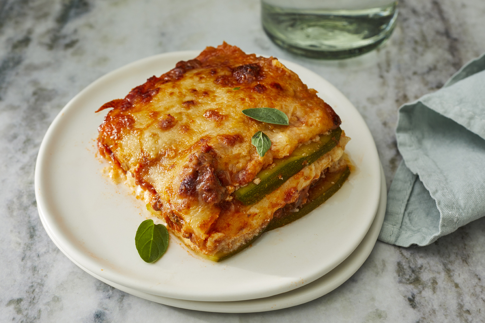

Lasagna

Description
Here is a partial recipe for lasagna. The rest of the recipe can be found at this site
- 1 ½ large zucchinis, thinly sliced lengthwise
- 1 pound ground beef
- 1 (8 ounce) container ricotta cheese
- 1 egg
- 2 cups shredded mozzarella cheese, divided
- The rest of the ingredients can be found here...
- Step 1 - Preheat oven to 375 degrees F (190 degrees C). Grease an 8-inch baking dish with cooking spray.
- Step 2 - Pat dry zucchini slices with a paper towel to get rid of excess moisture.
- Step 3 - Heat olive oil in a saucepan over medium-high heat. Add ground beef; cook until browned, 5 to 8 minutes. Add marinara sauce, 1 teaspoon salt, oregano, and pepper; simmer for 10 minutes.
- Step 4 - Combine remaining 1 teaspoon salt, ricotta cheese, egg, and nutmeg in a bowl; mix well.
- Step 5 - Make 1 layer of zucchini slices in the prepared baking dish. Cover with 1/2 of the sauce. Add another layer of zucchini slices. Spread ricotta mixture on top. Sprinkle with 1 cup mozzarella cheese. Add another layer of zucchini slices; cover with the remaining sauce and top with 1 cup mozzarella cheese and Parmesan cheese. Cover baking dish with aluminum foil.
- Step 6 - Bake in the preheated oven for 30 minutes. Remove aluminum foil and bake until top is golden, about 15 minutes more.
Credit to Fioa on allrecipes for the recipe!
Link to recipe...